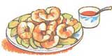
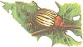
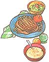
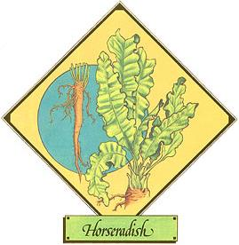

Mother's Herb Garden
The flavor of horseradish ( Armoracia rusticana , A. lapathifo lia , Cochlearia armoracia, C. rusticana, Rorippa armoracia, or Radicula armoracia , depending on which botanical authority you follow) is enough to bring tears to the eyes ...and so, in some cases, are its growth habits. The plant-which attains two feet or so in height and has large, elongated, serrated, and wavy-edged leaves-is uncommonly prolific. Any little piece of root left in the ground is capable of developing rootlets and shoots-which means that gardeners who harvest the crop in autumn (leaving perhaps some tiny root tips in the soil) and subsequently till the ground are likely to find horseradish plants growing everywhere in their gardens the following spring.
Of course, having a lot of horseradish isn't altogether a bad thing, because-although it's most famous as a condiment-the big perennial has many uses ...culinary, medicinal, and even cosmetic. The first spring leaves, chopped fine and mixed with other salad greens, or boiled with an assortment of other leafy vegetables, have an interesting spicy flavor ...too strong by itself but stimulating when combined with milder greens. The root, which should always be used raw and freshly grated, has even been served as an appetizer, dipped in salt! But it's as a condiment that horse radish is best known, function ing as the chief ingredient in tangy sauces for fish, meat, fowl, or vegetables. When served with beets, beef, boiled chicken, boiled and smoked meats, and shellfish, its zest is unexcelled. It also improves cocktail sauces, mustard sauce, and hollandaise.
High in vitamin C, the root was used in the past as a cure for scurvy. When mixed with vinegar, diluted with water, and sweetened with glycerin, it is said to relieve whooping cough in children. When used as a syrup or in a vinegar solution, it promotes perspiration and stimulates the nervous system, improving digestion and acting as both a diuretic and a laxative. (Caution should be exercised, however: Excessive doses can lead to diarrhea or night sweating.) The root gratings, spread on a cloth and applied directly to the skin, have also served as a plaster for sciatica, gout, and various joint aches; in a vinegar solution, the herb can function as a good liniment. An infusion of the root in milk is considered by some to be good for the skin and to restore color to the cheeks, while the juice, mixed with white vinegar and applied to the skin, is reputed to remove unwanted freckles.
The characteristic pungent odor of horseradish is created only when the root is broken. The oil is strong and highly diffusible: One drop can odorize a whole room! When exposed to air, however, the root changes color and loses strength; and if boiled, it becomes vapid and inert.
Horseradish, which is best planted early for a good fall crop, needs to be replanted every few years as its quality deteriorates. Root cuttings, called "thongs," can be 6"-7" long and may or may not include a bud. Plant them 12"-15" deep and 12"-18" apart. Harvest the roots in the autumn of their third year, store them in damp sand or the refrigerator (where they'll keep very well), andunless you've planted them well away from the rest of your garden-hope you've gotten all the pieces out of the ground.
Horseradish roots can be purchased at supermarkets or obtained through most major seed companies.
|
 An infusion of horseradish in milk restores color to the cheeks |
 Horseradish is a favorite seasoning for seafood sauce. |
 Horseradish deters potato bugs when planted in the garden. |
|
Horseradish makes a tangy cream sauce for meats. |
 |
|